A Recurrent Neural Network Tutorial
Artificial neural network have been prevalent these days for machine learning and artificial tasks. It was first introduced in the 40s, reborn in the 80s and gained much interest in recent years. The reason why it is not as popular as some other machine learning techniques lies in the fact that training a neural network is computationally hard, and the training algorithms available were not smart enough to decrease the computational cost. Nevertheless, it finally regain many researcher’s interest recently, with the introduction of some fancy new models and parallel design of the algorithms.
In this essay, I will focus on one kind of artificial neural network – Recurrent Neural Network (RNN). Essentially there is not so much new in RNN. If you are familiar with the vanilla Feedforward Neural Network, then RNN won’t cause you any trouble. Besides, there have been some another good blogs/articles about RNN, but many of those only tend to provide a crude image of RNN, not detail. So I decide to write one more, and hopefully some other will find something interesting here. This materials are based on what I have learned from papers and online tutorials recently, which may not be 100% correct. Feel free to correct me :)
what is RNN
Basically the architecture of RNN is:


Note that we use one node for the hidden layer for simplicity(just an abstraction). In real world, the architecture would be much more general and complicated. For example, if we look inside into the hidden layer node, you will see something like this:

As you can see, it’s very similar to a feed-forward neural network.
What is RNN used for
The goodness of RNN is its ability to learn sequential knowledge. For example, given a sequence of input, we can use RNN to predict the next output:
Today is sunny and I am very __
With the help of RNN, we can easily predict that the next word of these sequence is happy or some other similar words. Why can RNN be used for this? Because it record the sequential information of input by the way of its recurrent mechanism:

Here is a very intuitive explanation. Imagine that RNN has seen some sentences like these:
- Today was sunny, I am very happy.
- Today is sunny, I feel very happy
- weather is good, I feel very happy
- …
Note that although some words are different, they have very similar meaning with others (e.g. was vs is), so with lots of these sentences going through RNN repeatedly, it "learn" to build an internal architecture which embody info about these sentences. Consequently, when you input
Today is sunny, I _
it would confidently predict the next word to be am or feel. When you input
Today is sunny, I am very _
it would confidently predict the next word to be happy.
The old FNN can not do this (as least not as easily as RNN), however, because it has no state information like RNN. Also, we can see that FNN’s input dimension is fixed, while RNN can scale to as many dimensions as needed. Moreover, RNN had been changed / extended to many other powerful model, like LSTM, GRU and word2vec.
Of course the application of RNN is not limited to word prediction. With a little change, we can achieve various usages. For example,
- char-rnn, character-level language models by Andrej Karpathy
- image/video captioning
- translation
- image processing
How to use RNN
This is the main part of this essay. In this part, I will explain the mathematics behind RNN, and then give a implementation of it. Some knowledge of mathematics is required to go through this part, though (read carefully, it’s not that hard). You can also refer to Razvan Pascanu et al., here and here if having any difficulties going through the algorithms.

The Forward Pass of RNN
A generic recurrent neural network, with input 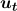 and state 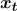 (state 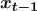 is the previous state) for time step 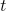, is given by:
(1)
(2)
Note that those bold symbols above are vectors. And eq.2 can be omitted if you want equal
More generally:
(3)
In this case, the parameters of model are given by the recurrent weight matrix 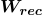, the bias 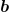 and input weight matrix 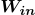, collected in 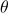 for general case. 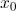 is provided by the user, set to zero or learned, and 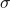 is an element-wise function such as sigmoid. A cost 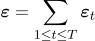 messures the performance of the network of the given task. We define 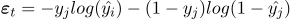, which is the so-called cross-entropy. Here 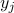 is the correct answer(the label) and 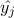 is the output of RNN.
(ps. cross-entropy is a very interesting function which is used in many other machine learning algorithm. I have write an essay about it here.
The Backward Pass of RNN
When training RNN, the most widely used algorithm is BPTT (BackPropagation Through Time). Essentially, BPTT is just like the ordinary BP algorithm used in Feedforward Neural Network. The thing that makes it distinguished from ordinary BP is that when backpropagating at node/time , BPTT generate the error gradient with respect to all nodes from 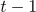 to  , thus the name backpropagate through time.
, thus the name backpropagate through time.
The gradient is calculated as follow:
(4)
(5)
(6)
These equations were obtained by writing the grdients in a sum-of-product form[2].
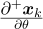 refers to the immediate partial derivative of the state
with respect to , where is taken as a constant with respect to (more detail here). Specifically, considering eq.3, the value of any row 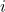 of the matrix 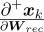 is just 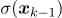. Eq.6 also provides the form of Jacobian matrix  for the specific parametrization given in eq.3, where 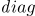 convert a vector into a diagnol matrix, and 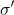 compute the element-wise derivative of .
for the specific parametrization given in eq.3, where 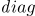 convert a vector into a diagnol matrix, and 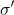 compute the element-wise derivative of .
Any gradient component 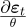 is also a sum(see eq.5), whose terms we refer to as temporal contribution or temporal component. One can see that each such temporal contribution 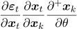 measures how at step 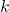 affects the cost at step 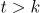 and the factors 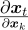 (eq.6) transport the error in time from step back to step (because 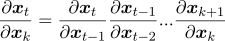). This is the essence of Backpropogationo Through Time. This way, the error is back-propogated from time to time , 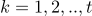.
When I implement a example RNN below I would give a concrete derivation of these gradient so that you can see it clearly.
One more thing: we would further loosely distinguish between long term and short term contributions, where long term refers to components for which 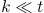 and short term to everything else.
Exploding and Vanishing Gradient
When using BPTT to train RNN, one can easily get trapped into the exploding gradient problem or vanishing gradient problem. It turn out that 2-norm, which you can think of as absolute value, of the above Jacobian matrix can grow to extremely large (exploding) or small (vanishing) when . This problem was first introduced in Bengio et al. (1994). In that paper, the 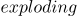 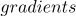 problem refers to the large increase in the norm of the gradient during training. Such events are due to the explosion of the long term components, which can grow exponentially more than short term ones. The 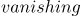 problem refers to the opposite behaviour, when long term components go exponentially fast to norm 0, making it impossible for the model to learn correlation between temporally distant events.
We can easily see the problem from eq.6. When we calculate a long-term contribution, i.e. , eq.6 would explode or vanish (Multiplying a number  multiple times would cause the product to explode eventually, and vanish if 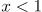)
multiple times would cause the product to explode eventually, and vanish if 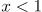)
Here is a example regarding the vanishing gradient problem:
sentence-1:
Jane walked into the room. John walked in too. Jane said hi to __
sentence-2:
Jane walked into the room. John walked in too. It was late in the day, and everyone was walking home after a long day at work. Jane said hi to __
Ideally, RNN should predict both to be "John" . However, in practice, RNN may fail at sentence-2. This is because during the back-propapation phase, the contribution of gradient values gradually vanishes as they propagate to earlier time steps. Thus, for lone sentences, the probability that "John" would be recognized as the next word reduces with the size of the context.
Solutions to the Exploding & Vanishing Gradients problem
Researcher have propose many solution to solve the Exploding & Vanishing problem. Below are some famous ones.
Difference between RNN and FNN
Below are two gif that can be used to show the different between RNN and FNN. These two gif are from Yjango’s website:
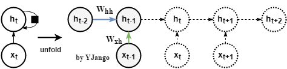
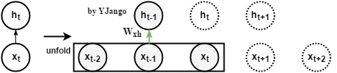
You may have noticed the core difference: there are connection between sibling nodes in RNN, while not in FNN.
Implementation of RNN in python
Now we implement a simple RNN in python. In this example implementation, we use plain numbers instead of words as input, since using words as input would requires that we transform every word to a word vector for RNN to train, which is another topic and is out of the scope of this post. We leave it to another essays.
In this simple example, we want to do is build a RNN, train it on a sequence of numbers, hopefully it can figure out the pattern in that numbers sequence and the predict the next one. For simplicity, here we assume that all the numbers are bound within [0, 1].
After training, the RNN would behave as follow:
Pass 1
input: 0.1
predict: 0.998
next pass
input: 0.1, 0.2
predict: 0.998, 0.189
. . .
next pass
input: 0.1, 0.2, 0.3, 0.4, 0.5, 0.6, 0.7, 0.9
predict: 0.998, 0.189, 0.399, 0.478, 0.601, 0.702, 0.788, 0.870
Python code
#!/usr/bin/python3
#coding:utf-8
# pylint: disable=superfluous-parens, invalid-name, broad-except, missing-docstring
import math
#initialize weight
w = 0.5
v = 0.5
b = 0.5
learning_rate = 0.5
# x_t_sum = w * x_t + v * u_t + b
# y_t_sum = w * x_t + v * u_t + b
# x_t = sigmoid(x_t_sum),
# y_t = sigmoid(y_t_sum),
#(we could change any sigmoid to tanh)
#where:
#w is the recurrent weight,
#v is the input weight
#b it the bais
def sigmoid(x):
return 1 / (1 + math.exp(-x))
def sum_recursive(seq, pred_seq, upperbound, r, previous_part):
if r < 0:
return 0
if r == 0:
x_t_own = 0
else:
x_t_own = pred_seq[r-1]
in_t = seq[r]
sg = sigmoid(w * x_t_own + v * in_t + b)
own_part = sg * (1 - sg) * x_t_own
if r == upperbound:
left_part = 1
else:
left_own = pred_seq[r]
left_in_t = seq[r+1]
sg_left_own = sigmoid(w * left_own + v * left_in_t + b)
left_part = sg_left_own * (1 - sg_left_own) * w
left_part = previous_part * left_part
return (left_part * own_part) + sum_recursive(seq, pred_seq, upperbound, r-1, left_part)
def calculate_w_grad(seq, pred_seq, i):
# + 0.0001 so that it won't cause Divided-by-zero-Exception
de_over_dxt = -seq[i] / (pred_seq[i] + 0.0001) + (1 - seq[i]) / (1 - pred_seq[i])
g = sum_recursive(seq, pred_seq, i, i, 1)
return de_over_dxt * g
def calculate_v_grad(seq, pred_seq, i):
# + 0.0001 so that it won't cause Divided-by-zero-Exception
de_over_dxt = -seq[i] / (pred_seq[i] + 0.0001) + (1 - seq[i]) / (1 - pred_seq[i])
if i == 0:
x_t_1 = 0
else:
x_t_1 = pred_seq[i-1]
in_t = seq[i]
sg = sigmoid(w * x_t_1 + v * in_t + b)
derivative = sg * (1 - sg)
return de_over_dxt * derivative * in_t
def calculate_b_grad(seq, pred_seq, i):
# + 0.0001 so that it won't cause Divided-by-zero-Exception
de_over_dxt = -seq[i] / (pred_seq[i] + 0.0001) + (1 - seq[i]) / (1 - pred_seq[i])
if i == 0:
x_t_1 = 0
else:
x_t_1 = pred_seq[i-1]
in_t = seq[i]
sg = sigmoid(w * x_t_1 + v * in_t + b)
derivative = sg * (1 - sg)
return de_over_dxt * derivative
def rnn(in_seq):
global w
global v
global b
# train RNN with 3000 round
for _ in range(3000):
x_t_1 = 0
pred_seq = []
for index, in_t in enumerate(in_seq):
x_t = sigmoid(w * x_t_1 + v * in_t + b)
pred_seq.append(x_t)
w_gradient = 0
v_gradient = 0
b_gradient = 0
for i in range(index + 1):
w_gradient += calculate_w_grad(in_seq, pred_seq, i)
v_gradient += calculate_v_grad(in_seq, pred_seq, i)
b_gradient += calculate_b_grad(in_seq, pred_seq, i)
w_gradient = w_gradient / (index + 1)
v_gradient = v_gradient / (index + 1)
b_gradient = b_gradient / (index + 1)
w = w - learning_rate * w_gradient
v = v - learning_rate * v_gradient
b = b - learning_rate * b_gradient
x_t_1 = x_t
print("Finished training: w: %f, v: %f, b: %f" % (w, v, b))
print("Start to predict:")
x_t_1 = 0
for in_t in in_seq:
x_t = sigmoid(w * x_t_1 + v * in_t + b)
print("Result %f\t%f" % (in_t, x_t))
x_t_1 = x_t
rnn([0.1,0.2,0.3,0.4,0.5,0.6,0.7,0.8,0.9])
Try run this snippet youself.
To help you understand the code above, let me illustrate the basic structure of the rnn above and calculate the gradients(derivatives) for you.
The basic structure is pretty much the same as that in figure 1 above:

The unrolled version would be:

This RNN predict the output given the current input, previous state(previous output) and current weights.
We calculate the error gradient as follow.
We denote the cost function as:
(7)
where 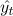 is the actual output and is calculated as:
(8)
Here we use the same function for 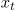:
(9)
In the above two formulas:
(10)
This way, the gradients are:
- The error gradient for 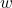 is:
(11)
- error gradient for 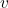 is
(12)
because there is no relation between and , where , we don’t have to write this derivative as immediate partial derivative form:
(13)
- error gradient for
 is
is
(14)
And then we subtract the gradients from the previous parameter:
where is the learning rate.
References
-
Bengio et al. (1994), Learning long-term dependency with gradient descent is difficult, IEEE Transactions on Neural Networks, 5(2), 157-166
-
Razvan Pascanu, Tomas Mikolov, Yoshua Bengio, On the difficulty of training recurrent neural networks, JMLR W&CP 28 (3) : 1310–1318, 2013
Yubin Ruan, last modified on 2016-12-12
Comments powered by disqus